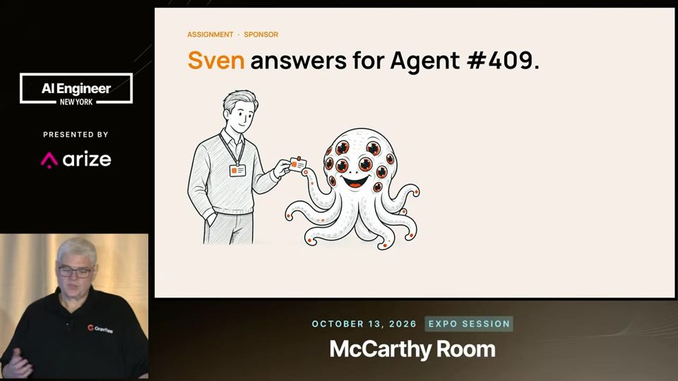
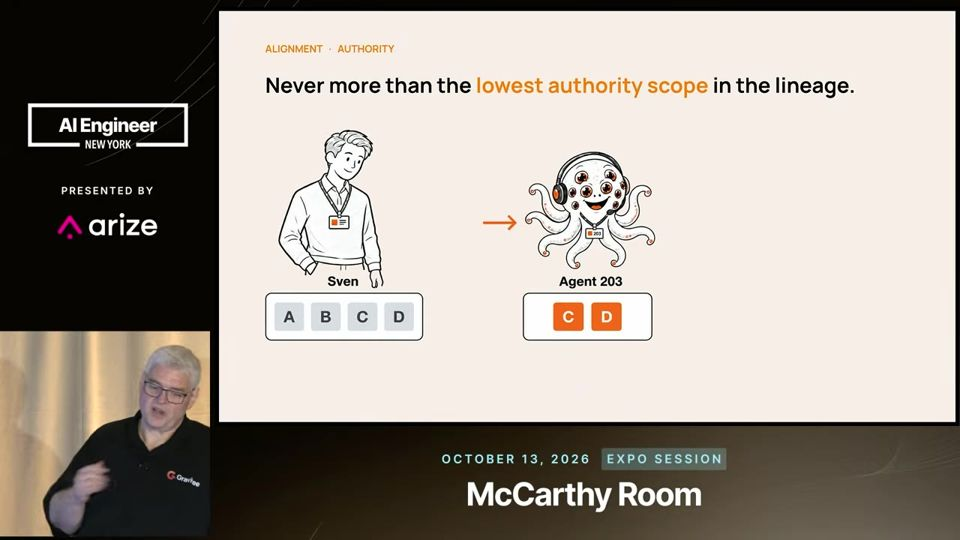
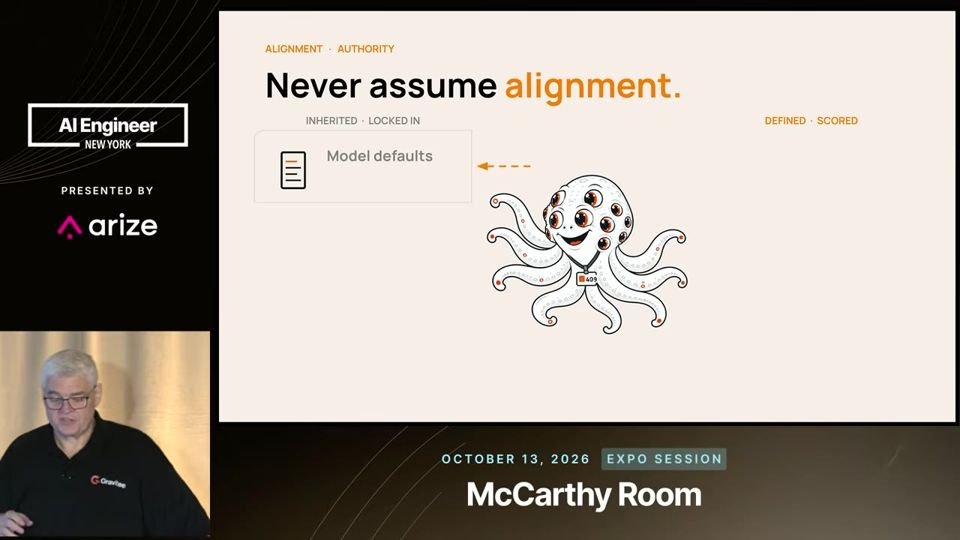
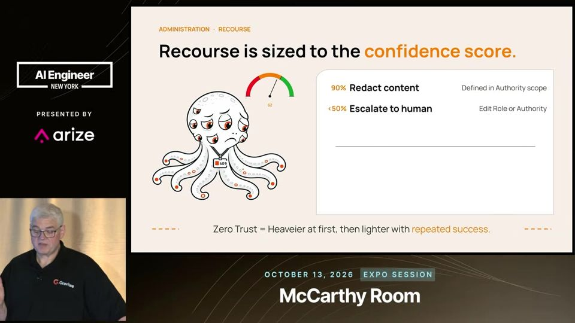

Why Are We Still Governing AI Agents Like Software? - Tim Tyler, Gravitee
Trate cada agente como funcionário: crachá, chefe nomeado, cargo definido, acesso mínimo e supervisão constante.
Em 3 frases
Tim Tyler, da Gravitee, propõe governar agentes de IA como uma força de trabalho digital, copiando o que empresas já fazem com funcionários humanos.
O modelo tem três etapas. Atribuição dá identidade única e um responsável nomeado. Alinhamento define cargo, missão e acesso mínimo. Administração mede o desempenho e aplica sanções graduais.
A supervisão precisa rodar em velocidade de máquina, com agentes guardiões e regras de confiança que levam de correção a bloqueio, porque revisão trimestral chega tarde demais.
Antes de ler
- Identidade de agente ID único do agente em um cadastro compartilhado
- Princípio do menor privilégio dar só o acesso mínimo para a tarefa
- Delegation chain cadeia de delegação entre agentes e pessoa
- Mission missão: o que o agente faz naquele momento
- Sistema determinístico regras fixas com resultado previsível
- Confidence score nota de confiança da avaliação
Todo agente tem identidade e um responsável
O agente recebe um ID único, registrado em um cadastro central, e um patrocinador humano com nome. No exemplo, o agente 409 responde a Sven, que define o propósito, responde pelo custo e atende o telefone se algo der errado. Tyler compara com o hábito de olhar nos olhos de outro adulto e perguntar 'você está com as crianças?' na piscina.

Acesso do agente nunca passa do acesso de quem delega
Sven acessa A, B, C e D. O agente 203 tem C e D. O agente 409 tem D, E e F. Quando o 203 delega uma tarefa ao 409 em nome de Sven, o 409 só devolve o que todos os três enxergam, ou seja, D. O poder nunca cresce ao longo da cadeia.

Alinhamento herdado não está sob seu controle
O modelo, o contexto de equipe e agentes externos trazem regras que o patrocinador não controla e que podem mudar sem aviso. Por isso Tyler separa o que é herdado do que é definido por Sven: regras determinísticas como piso e intenções probabilísticas como meta. O alinhamento definido vira um contrato para o agente.

Mais 2 ideias deste talk
Avaliação em scorecard: regras checadas, intenções julgadas
Comportar-se bem não garante entregar resultado. Regras claras, como o limite de valor de fatura, são checadas. Metas como a precisão no casamento de faturas são julgadas com um nível de confiança. Os pesos do scorecard vêm das definições de cargo e autoridade.
12:25 Um scorecard mistura regras duras e metas avaliadas por confiança.
Sanção gradual por nível de confiança
Com um score de confiança, o julgamento probabilístico vira ação determinística. Confiança alta pede apenas redigir o conteúdo. Confiança média escala para um humano. Confiança baixa bloqueia. Para violações de acesso, a escada vai de restringir a suspender, e o controle começa pesado e afrouxa com sucessos repetidos.

A palestra é pitch da Gravitee, que vende gestão de agentes, e promove o framework do próprio palestrante. Não há dado, estudo de caso ou métrica de redução de incidentes. As faixas de 90%, 50% e 20% são exemplos, sem base empírica de que a confiança do avaliador seja calibrada. Falta dizer como medir 'intenção' de forma confiável e quanto custam os agentes guardiões.
O que fazer com isso
- Liste os agentes que sua equipe usa e dê a cada um um nome único e um responsável humano registrado.
- Revise o acesso de cada agente e corte tudo que a tarefa não exige. Evite credenciais compartilhadas.
- Escreva para cada agente uma descrição de cargo curta com propósito, responsabilidades e como medir sucesso.
- Defina uma escada de ação para falhas: corrigir, restringir acesso, escalar para uma pessoa e, por último, suspender.